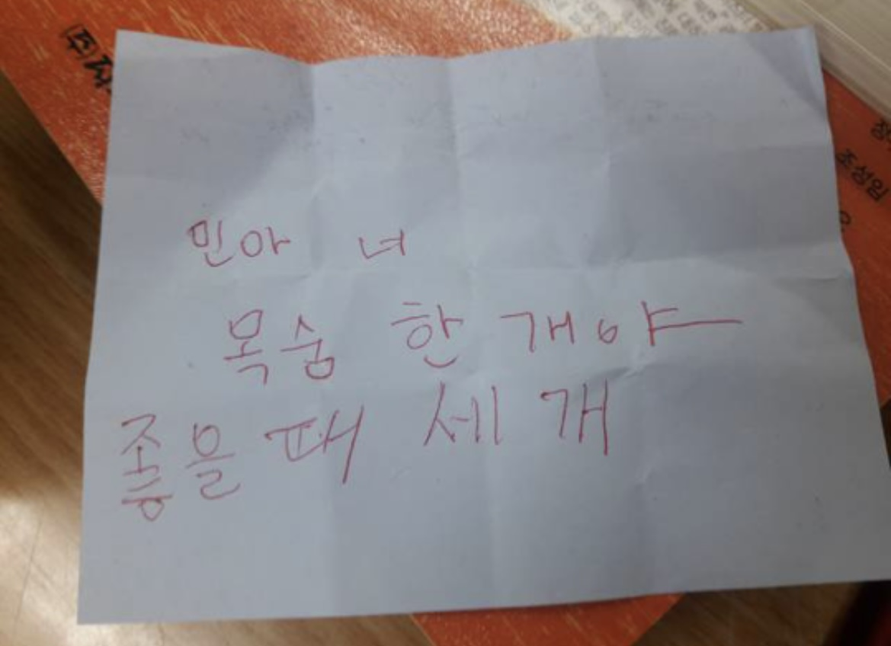
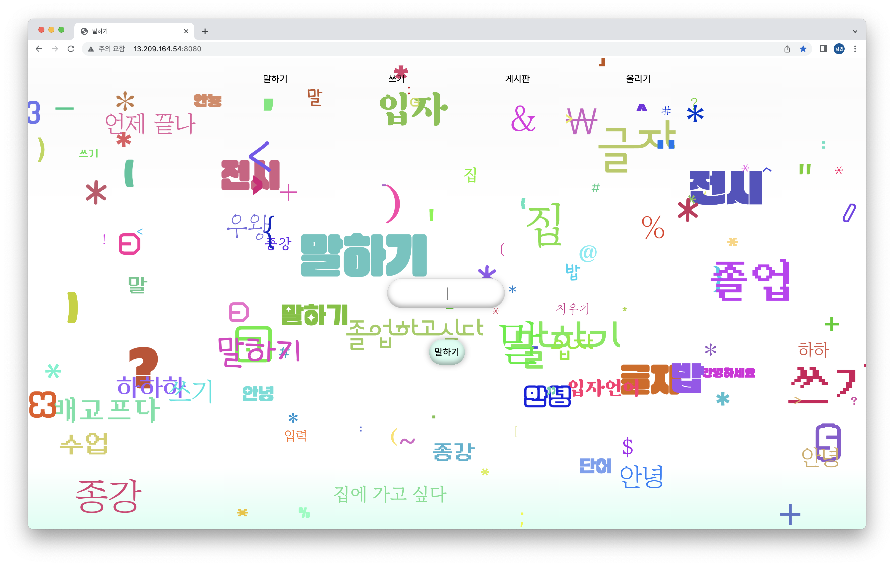
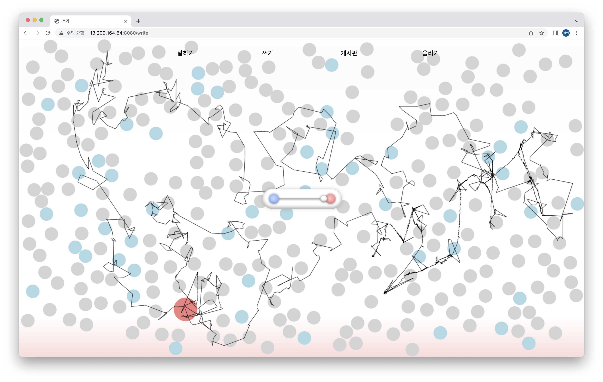
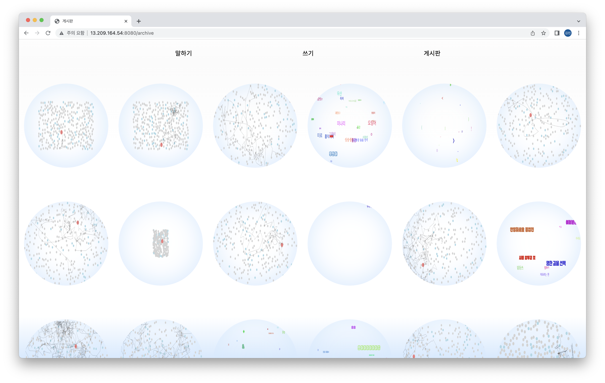

김민은 2000년 3월 20일에 태어났다.
3월 20일은 물고기자리의 마지막 날로, 다음날인 21일(어머니 생신이다.)부터는 양자리에 해당한다. 그래서 초등학교 저학년 때까지 양자리라고 착각했다.
3을 좋아한다.
보라색을 좋아한다. 방 벽지와 이불, 매트리스 커버, 베개 커버, 러그 모두 보라색이다. 물건을 살 때 보라색이 선택지에 없는 경우가 많아 대체할 때 조금 슬퍼져서 애초에 색상 필터로 보라색 물건을 사려고 한다. 거리나 가게에서 보라색 물건을 보면 취향에 맞지 않아도 일단 호응하며 보라색의 부흥을 기원한다.
고양이를 좋아한다. 인스타 릴스, 유튜브 쇼츠로 하루에 최소 20분은 고양이를 보고 있다. 그러나 가족 중 두 명이 고양이 알레르기를 가지고 있어 독립했을 때 주황색 털을 가진 고양이를 보호소에서 데려오려고 한다. 이름은 고등학교 1학년 때 카레로 정해두었다.
헬로키티를 좋아한다. 메인 컬러가 빨강이라 굿즈가 보라색이 아닌 것이 거슬리지만 그것을 이길 정도로 좋아한다.
이름이 외자이고 ‘ㄱ, ㅣ, ㅁ, ㄴ’으로만 구성되어 있다. ㄱ을 뒤집으면 ㄴ이 되니까 사실상 세 개의 자모만 사용하고 있다고 봐도 무방하다. OMR 마킹할 때 편하지만 그것뿐이다. 항상 이름에 ‘ㅇ’을 가진 사람들을 부러워한다. 고등학교 미술반 선발 시험 문제로 ‘자신의 이름을 가지고 가구(혹은 의자일 수도 있다)를 디자인하라’는 문제를 받고 절망한 적도 있다. 그래서 동그라미를 좋아하고 자주 쓰는 걸지도 모른다.
중학교 시절부터 “코딩을 내가 왜 해”라고 생각했으나 2학년 2학기 타이포2 수업에서 어쩌다 보니 결과물을 웹사이트로 제작하게 되어 피할 수 없게 되었다.
  OTT 중독이라 넷플릭스, 웨이브, 쿠팡플레이, 디즈니플러스, 티빙 모두 구독 중이다. 영화보단 드라마를 좋아한다. 한 편에 3~40분 정도 하면서 시즌제인 드라마를 선호한다. 지금까지 본 드라마 중 가장 긴 것은 그레이 아나토미로, 현재 시즌 19 방영 중이며 시즌 20이 예정되어 있다.
최근 축구에 빠졌다. 원래도 빨리 자면 2시였지만 축구 경기 있는 날은 5시에서 6시에 자게 되어 수면 패턴이 제대로 망가졌다. 다행인 점은 학기 중에 축구를 보려고 과제를 미리 하거나 축구를 보면서 과제를 할 수 있게 되었다는 것이다. 3월 28일 화요일 수업이 끝나고 대한민국 vs 우루과이 A매치를 보러 갈 예정이다.